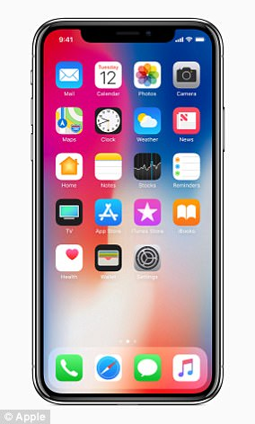
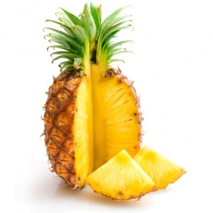
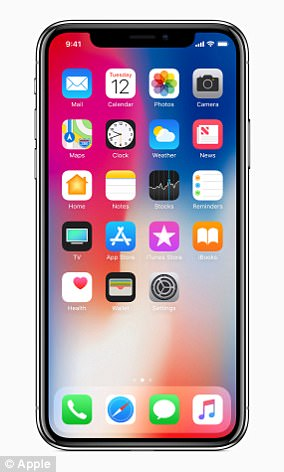
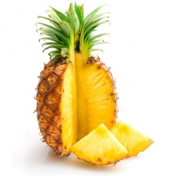
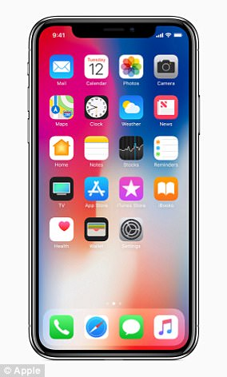
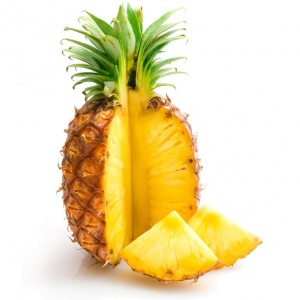
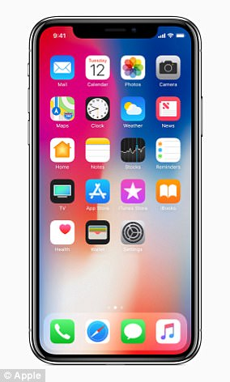
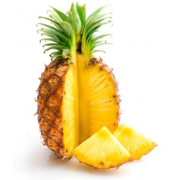

 



Born in Delhi, Virat Kohli shot into prominence as the Under-19 skipper, who led India to victory at the 2008 World Cup held in Malaysia. That accolade gained him instant recognition and made him an overnight teen sensation. Soon he made his ODI debut for India in Sri Lanka in August 2008 when he was thrust into the opener's role as both Virender Sehwag and Sachin Tendulkar were ruled out due to injuries. He played two important knocks - 37 in the second ODI and 54 in the fourth - both of which resulted in India winning, thereby enabling them to win the series as well. After such an impressive showing, he was slightly unlucky to remain on the bench when England visited India in December 2008, as Tendulkar and Sehwag had returned and the middle-order was strong and packed.Kohli, however, was not disappointed and he went back to the domestic scene and continued to plunder attacks playing for Delhi.
The pineapple (Ananas comosus) is a tropical plant with an edible multiple fruit consisting of coalesced berries, also called pineapples, and the most economically significant plant in the Bromeliaceae family.
Pineapples may be cultivated from a crown cutting of the fruit, possibly flowering in 5–10 months and fruiting in the following six months. Pineapples do not ripen significantly after harvest.
Pineapples can be consumed fresh, cooked, juiced, or preserved. They are found in a wide array of cuisines. In addition to consumption, the pineapple leaves are used to produce the textile fiber piña in the Philippines, commonly used as the material for the men's barong Tagalog and women's baro't saya formal wear in the country. The fiber is also used as a component for wallpaper and other furnishings.